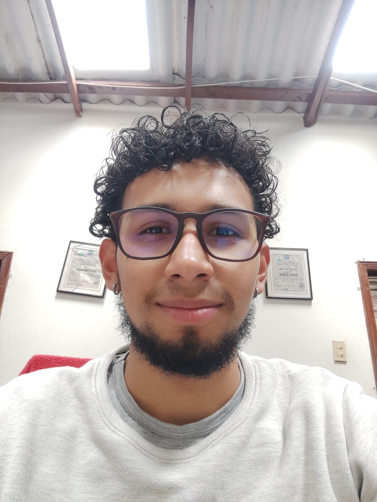

{% extends './layout.html' %}
{% block titulo %} Administrador BBDD {% endblock %}

{% block body %} 
    <div class="all-biography">
        <div class="name-perfil-camilo">
            <h1>Andrés Camilo Delgado Ramos</h1>
            <h2>Sobre mi</h2><br/>
        </div>
        <div class="content-biography">
            <div class="information">
                <h2>👶 Niñez</h2>
            
                <ul>
                    <li>~ Nací el 16 de febrero del 2002 en Ubaté y mis primeros años de vida los pase en el campo</li>
                    <li>~ Madre: Sandra Ramos</li>
                    <li>~ Padre: Jose Delgado</li>
                    <li>~ Hermanos: 1 (hermana menor)</li>
                </ul>
                <h2>👦 Adolescencia</h2>
                
                <ul>
                    <li>~ Estudie en el colegio Escuela Normal Superior de Ubaté</li>
                    <li>~ Realice un curso en el SENA relacionando con herramientas ofimáticas</li>

                </ul>
                <h2>👨‍💻 Vida en la Universidad</h2>
                <br>
                <ul>
                    <li>~ Ingeniería de Sistemas en la Universidad de Cundinamarca</li>
                    <li>~ Participación en competencias internas de programación y proyectos</li>
                    <li>~ Tome estudios anexos a la carrera pero siguiendo siempre la linea de la tecnologia, innovación y programación</li>
                </ul>
                <h2>🎮 Pasatiempos</h2>
                
                <ul>
                    <li>~ Jugar Videojuegos</li>
                    <li>~ Cursos secundarios relacionados con la carrera</li>
                    <li>~ Practicar ciclomontañismo</li>
                </ul>
                <h2>🎯 Metas</h2>
                
                <ul>
                    <li>~ Graduarme como ingeniero</li>
                    <li>~ Tener trabajo estable y bien remunerado</li>
                </ul>
            </div>
            <div class="photo">
                
            </div>
        </div>
    </div>
{% endblock %}
{% block button_footer %}
<button class="button-comentario"><a href="/comentarios" style="text-decoration: none;">Dejar un
        comentario</a></button>
{% endblock %}
